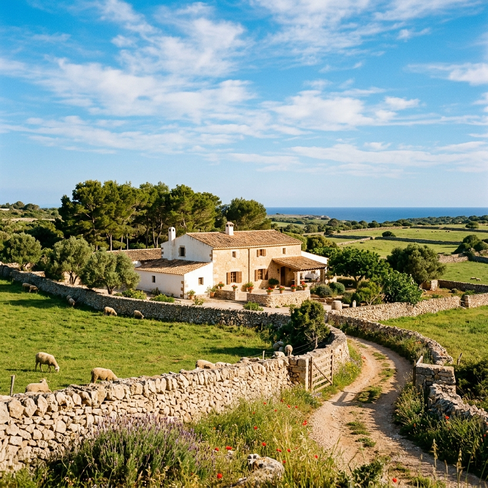
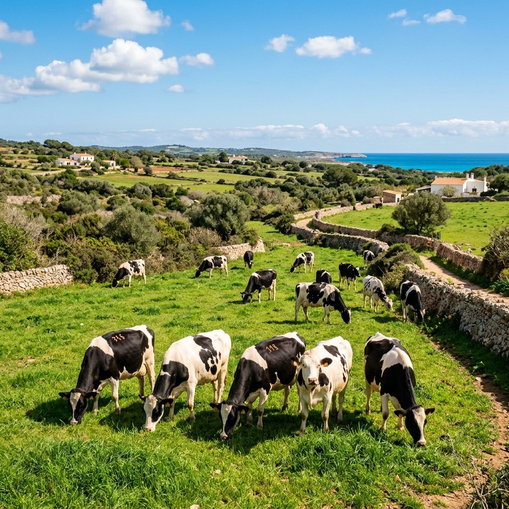
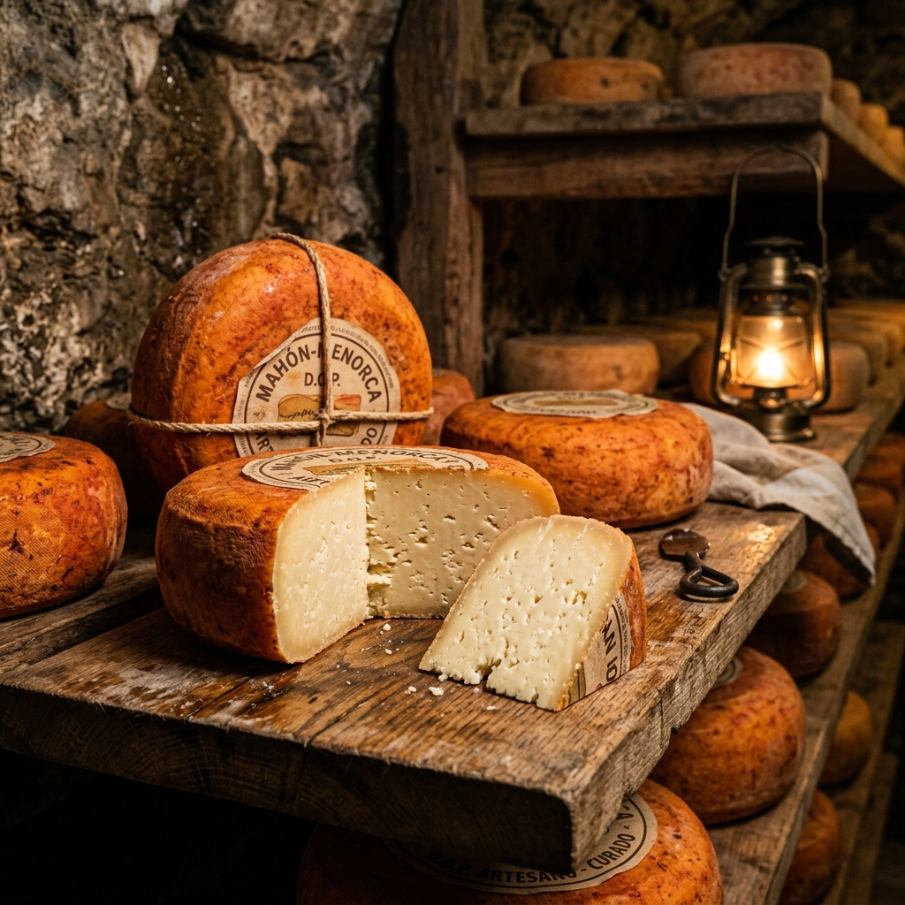

Tradición Menorquina desde hace más de un siglo
Descubre nuestro queso artesanal Mahón-Menorca, nuestras carnes de primera calidad y vive la experiencia del campo balear de forma sostenible.
Nuestra misión es preservar la esencia del campo menorquín mediante una producción sostenible que combina las técnicas ancestrales con la innovación tecnológica del siglo XXI.

Elaborado con leche cruda y madurado en nuestras cavas de marès.

TiernoMaduración: 21-60 días
Suave, blanco, notas de leche fresca.
Maduración: 2-5 meses
Color marfil, sabor láctico más complejo.
Maduración: 5-10 meses
Textura quebradiza, sabor intenso y picante.
Maduración: +12 meses
Textura muy firme, notas de frutos secos.
Recorrido guiado, sala de ordeño, cavas y degustación. 90 minutos.
15€ adultos / 8€ niños
Elabora tu propio queso con fogasser. Cata de vinos incluida.
45€ por persona
Ayudamos a la transición a modelos rentables. Optimización genética y DOP.
Solicitar InfoResolvemos tus dudas sobre nuestros productos y envíos.
El queso Mahón-Menorca curado y añejo tiene niveles de lactosa prácticamente inexistentes debido al largo proceso de maduración, pero no disponemos de una línea certificada "Zero Lactose" para el queso tierno.
Sí, nuestras vacas están en pastoreo abierto. Durante la visita guiada se accede a las zonas seguras de los cercados.
Sí, realizamos envíos, aunque los tiempos de entrega pueden variar entre 3 y 5 días debido a trámites aduaneros.
Nuestros quesos y la mayoría de nuestros embutidos son libres de gluten. La sobrasada se elabora con especias puras.
Se recomienda mantenerlo en la parte menos fría de la nevera (cajón de verduras), envuelto en papel parafinado o un paño de algodón ligeramente húmedo. Sacar 30 minutos antes de consumir.